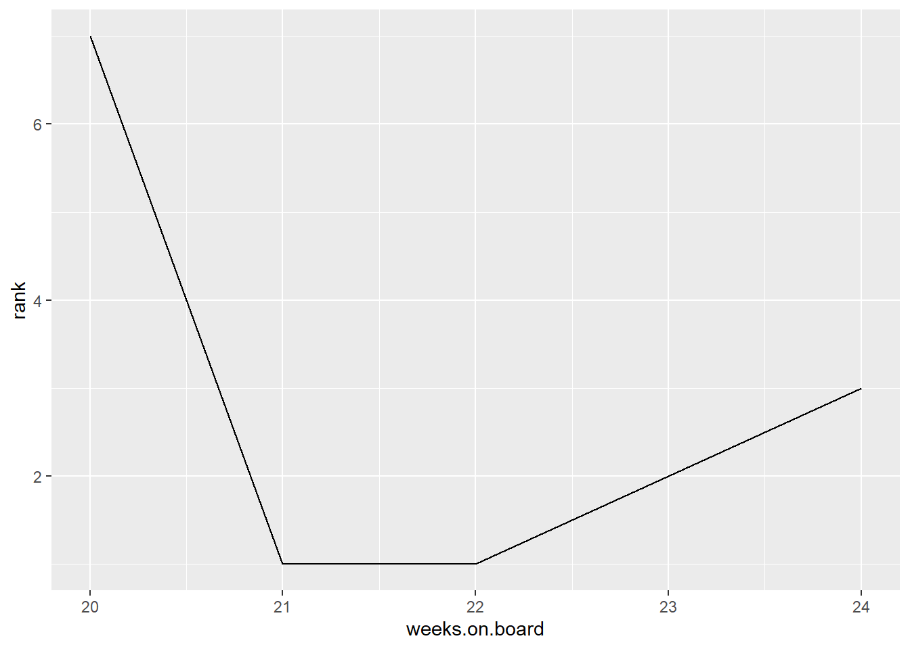
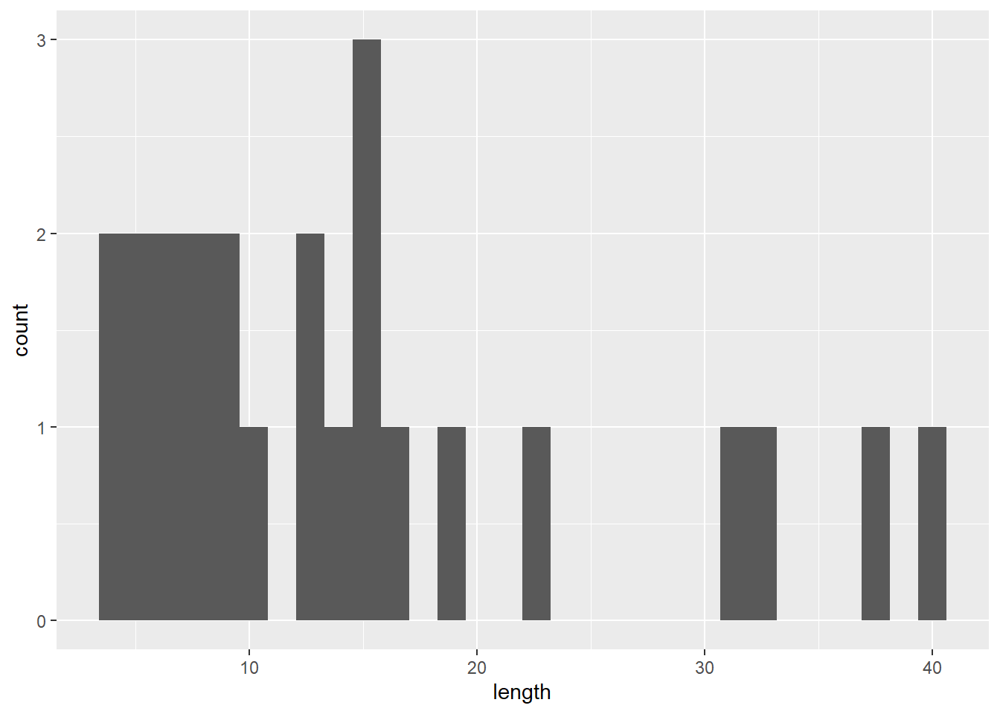

library(dplyr)
library(tidyr)
library(ggplot2)
library(plotly)Exam 1: Practice
The printed CSV file lists the weekly Billboard Top 10 songs from January 2021.
dateis the date that the song rank is announced by Billboard.last.weekis the position on the board of the song in the previous week.peak.rankis the peak rank of the song overall, in the past and in the future.weeks.on.boardis the number of weeks the song has been on Billboard Top 100 up to that date so far.
In R, we first we load some libraries and read in the CSV file:
df <- read.csv("https://manctsui.github.io/datasets/billboard_2021_01.csv")
df |> head(2) date rank song artist last.week peak.rank
1 1/30/2021 1 Drivers License Olivia Rodrigo 1 1
2 1/30/2021 2 34+35 Ariana Grande 11 2
weeks.on.board
1 2
2 12Problem 1
State the expected output of the code df[df$song == "Mood", "rank"].
Answer: 3, 2, 1, 1, 7. (Don’t worry about formating this nicely, or know if this displays as column or row.)
(What is graded: know that we are finding the rank for all occurrences of the song “Mood”, not just the first occurrence of it.)
df[df$song == "Mood", "rank"][1] 3 2 1 1 7Problem 2
State the expected output of df |> filter(song == "All I Want For Christmas Is You") |> select(weeks.on.board).
df |> filter(song == "All I Want For Christmas Is You") |> select(weeks.on.board) weeks.on.board
1 44
2 43Problem 3
Return the number of different songs that appeared in this list.
Answers: We had used distinct() in dplyr before, but not unique() from base R
# With dplyr: distinct
df |> distinct(song) |> count() n
1 24# With Base R: functions
length(unique(df$song))[1] 24# With Base R: pipes
df$song |> unique() |> length()[1] 24Answer 2: In dplyr, we can also aggregate by grouping then summarizing using any trivial aggregation formula like “1”, then either count the number of rows in the resulting table, or sum up this new column n:
# With dplyr: group_by then count number of rows
df |>
group_by(song) |>
summarize(n = 1) |>
nrow()[1] 24# With dplyr: group_by then sum
df2 <- df |>
group_by(song) |>
summarize(n = 1)
sum(df2$n)[1] 24Problem 4
Return which songs (on this list) reached their peak position in January 2021.
Answer: Since this list contains precisely those Billboard Top 10 songs from January 2021, we simply check if each song has rank equal to its peak rank. Then we omit repeats (like Drivers License which spent a few weeks at its peak position of #1).
df |> filter(rank == peak.rank) |> distinct(song) song
1 Drivers License
2 34+35
3 Levitating
4 Good Days
5 Go Crazy
6 Bang!
7 Wasted On You
8 Mood
9 Anyone
10 All I Want For Christmas Is You
11 Rockin' Around The Christmas Tree
12 Jingle Bell Rock
13 A Holly Jolly Christmas
14 It's The Most Wonderful Time Of The Year
15 Feliz Navidad
16 Let It Snow, Let It Snow, Let It Snow
17 Last Christmas
18 Run Rudolph RunProblem 5
Return the songs which ranked higher (i.e. ranked better) in the week of January 30th than it did in the previous week.
Answer: “Ranked higher” actually means the rank is a smaller number than its last week rank:
df |> filter(date == "1/30/2021", rank < last.week) date rank song artist last.week peak.rank weeks.on.board
1 1/30/2021 2 34+35 Ariana Grande 11 2 12Problem 6
Return which songs first entered the Billboard Top 10 in January.
Answer: There is insufficient information to answer this problem; don’t worry about unanswerable problems like this.
Better problems:
- Which songs directly entered the Billboard Top 100 in January 2021 in its first week ranked \(\le 10\). (Answer: since every entry in our list is ranked \(\le 10\), just filter by
weeks.on.board == 1) - Which songs spent its third week ranked \(\le 10\) in January 2021 on the Billboard Top 100, having spent its second week on the Billboard Top 100 outside of the top 10? (Answer: filter by
weeks.on.board == 3 & last.week > 10)
Problem 7
Add a column called “january_occurrences” to the data frame df that tabulates the number of times a given song appears in the Billboard Top 10 in January 2021.
Answer:
Standard solution:
# With dplyr, group by song and mutate:
df <- df |>
group_by(song) |>
mutate(january_occurrences = n()) |>
ungroup()
# Check our answer:
df |> head() |> select(song, january_occurrences)# A tibble: 6 × 2
song january_occurrences
<chr> <int>
1 Drivers License 2
2 34+35 1
3 Mood 5
4 Blinding Lights 4
5 Positions 4
6 Levitating 4Different solution sums over indicator 1’s:
# With dplyr, group by song and mutate:
df <- df |>
group_by(song) |>
mutate(january_occurrences = sum(rank/rank)) |>
ungroup()
# Check our answer:
df |> head() |> select(song, january_occurrences)# A tibble: 6 × 2
song january_occurrences
<chr> <dbl>
1 Drivers License 2
2 34+35 1
3 Mood 5
4 Blinding Lights 4
5 Positions 4
6 Levitating 4Answer 2: We did not discuss joins, but you can join the following along the column song to df to produce a different solution:
df |> group_by(song) |> count() |> select(song, january.occurrences = n)# A tibble: 24 × 2
# Groups: song [24]
song january.occurrences
<chr> <int>
1 34+35 1
2 A Holly Jolly Christmas 1
3 All I Want For Christmas Is You 2
4 Anyone 1
5 Bang! 3
6 Blinding Lights 4
7 Drivers License 2
8 Dynamite 1
9 Feliz Navidad 1
10 Go Crazy 4
# ℹ 14 more rowsProblem 8
Return which songs appeared exactly once (i.e. for exactly one week) on the Billboard Top 10 in January 2021.
Answer: Since we solved Problem 7, we just need those songs which appeared exactly once in January:
df |> filter(january_occurrences == 1)# A tibble: 12 × 8
date rank song artist last.week peak.rank weeks.on.board
<chr> <int> <chr> <chr> <int> <int> <int>
1 1/30/2021 2 34+35 Arian… 11 2 12
2 1/23/2021 9 Wasted On You Morga… NA 9 1
3 1/16/2021 6 Anyone Justi… NA 6 1
4 1/9/2021 5 Dynamite BTS 44 1 19
5 1/2/2021 2 Rockin' Around The… Brend… 3 2 38
6 1/2/2021 3 Jingle Bell Rock Bobby… 4 3 35
7 1/2/2021 4 A Holly Jolly Chri… Burl … 6 4 19
8 1/2/2021 5 It's The Most Wond… Andy … 7 5 20
9 1/2/2021 6 Feliz Navidad Jose … 10 6 14
10 1/2/2021 8 Let It Snow, Let I… Dean … 11 8 13
11 1/2/2021 9 Last Christmas Wham! 14 9 19
12 1/2/2021 10 Run Rudolph Run Chuck… 29 10 8
# ℹ 1 more variable: january_occurrences <dbl>Problem 9
Rename every occurrence of “AJR” in df to “Adam Jack Ryan” and save this new data frame to a data frame called df2. Do not overwrite df.
# With dplyr
df2 <- df |> mutate(artist = ifelse(artist == "AJR", "Adam Jack Ryan", artist))
# With base R:
# make a copy of df,
# then change artist name
# by looking at column "artist"
# and rows with artist name of "AJR"
df2 <- df
row_condition <- df2$artist == "AJR"
column_condition <- "artist"
df2[row_condition, column_condition] <- "Adam Jack Ryan"Problem 10
Add a column to df called “days.on.board” that reports the number of days the song had spent on the Billboard Top 100 up to that date.
df$days.on.board <- 7 * df$weeks.on.boardProblem 11
Chart the weekly ranking of the song “Mood” with a line graph in ggplot or plotly.
Answer: We first store data relevant to “Mood” in a new data frame called mood. Since we have not learned string manipulations, we avoid directly using the character string date and instead use weeks.on.board as a proxy.
mood <- df |>
filter(song == "Mood") |>
select(date, rank, weeks.on.board)
mood# A tibble: 5 × 3
date rank weeks.on.board
<chr> <int> <int>
1 1/30/2021 3 24
2 1/23/2021 2 23
3 1/16/2021 1 22
4 1/9/2021 1 21
5 1/2/2021 7 20# With ggplot:
ggplot(mood, aes(x = weeks.on.board, y = rank)) + geom_line()
# With plotly:
# Note: plotly displays incorrectly in Google Colab and Jupyter Notebook
plot_ly(mood, x = ~weeks.on.board, y = ~rank, type = "scatter", mode = "line")Problem 12
Draw a bar chart (correction: histogram) that displays the distribution of the number of characters there are in the song titles from this list of songs (do not count the same song title twice).
title_length <- df |>
distinct(song) |>
mutate(song = nchar(song)) |>
select("length" = song)
# With ggplot
ggplot(title_length, aes(x = length)) + geom_histogram()`stat_bin()` using `bins = 30`. Pick better value `binwidth`.
# With plotly
# Note: plotly displays incorrectly in Google Colab and Jupyter Notebook
plot_ly(title_length, x = ~length, type = "histogram")Problem 13
Find the three songs in this list that jumped (up) the most in rank from the past week, out of the songs which had been on the Billboard Top 100 the previous week.
# With dplyr
df |>
mutate(rank_jump = last.week - rank) |>
arrange(desc(rank_jump)) |>
head(3)# A tibble: 3 × 10
date rank song artist last.week peak.rank weeks.on.board
<chr> <int> <chr> <chr> <int> <int> <int>
1 1/9/2021 5 Dynamite BTS 44 1 19
2 1/9/2021 8 I Hope Gabby Barre… 30 3 53
3 1/2/2021 10 Run Rudolph Run Chuck Berry 29 10 8
# ℹ 3 more variables: january_occurrences <dbl>, days.on.board <dbl>,
# rank_jump <int>Problem 14
Return the artists who had more than one non-collaborating song on Billboard Top 10 in January 2021.
Note: This problem is not written well since there are many exceptions. The intent here is to treat each artist name as distinct and we want to determine how many songs on the chart are associated to each artist name:
Partial answer: Below we count how many songs each artist name had:
df |>
select(song, artist) |>
distinct(song, artist) |>
group_by(artist) |>
count() |>
ungroup()# A tibble: 23 × 2
artist n
<chr> <int>
1 24kGoldn Featuring iann dior 1
2 AJR 1
3 Andy Williams 1
4 Ariana Grande 2
5 BTS 1
6 Bobby Helms 1
7 Brenda Lee 1
8 Burl Ives 1
9 Chris Brown & Young Thug 1
10 Chuck Berry 1
# ℹ 13 more rowsThen filter by n > 1.
df |>
select(song, artist) |>
distinct(song, artist) |>
group_by(artist) |>
count() |>
ungroup() |>
filter(n > 1)# A tibble: 1 × 2
artist n
<chr> <int>
1 Ariana Grande 2Problem 15
Report the songs by AJR, SZA, and Ariana Grande from this list ordered by most weeks on board, with the following expected output (note the change in column names):
| Song Name | Artist | Weeks on Board |
|---|---|---|
| <chr> | <chr> | <int> |
| Bang! | AJR | 29 |
| Positions | Ariana Grande | 13 |
| 34+35 | Ariana Grande | 12 |
| Good Days | SZA | 4 |
df |>
filter(artist %in% c("AJR", "SZA", "Ariana Grande")) |>
select("song", "artist", "weeks.on.board") |>
group_by(song, artist) |>
summarize(weeks.on.board = max(weeks.on.board)) |>
ungroup() |>
arrange(desc(weeks.on.board)) |>
select("Song Name" = song, "Artist" = artist, "Weeks on Board" = weeks.on.board)`summarise()` has regrouped the output.
ℹ Summaries were computed grouped by song and artist.
ℹ Output is grouped by song.
ℹ Use `summarise(.groups = "drop_last")` to silence this message.
ℹ Use `summarise(.by = c(song, artist))` for per-operation grouping
(`?dplyr::dplyr_by`) instead.# A tibble: 4 × 3
`Song Name` Artist `Weeks on Board`
<chr> <chr> <int>
1 Bang! AJR 29
2 Positions Ariana Grande 13
3 34+35 Ariana Grande 12
4 Good Days SZA 4